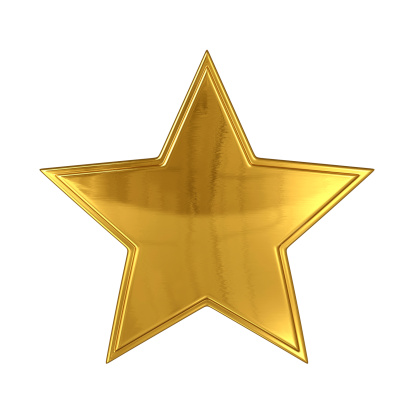

Unite Lab and Stuff
In creating a strategy, you need to take account of your playstyles, roles, and held items. These factors must be maximized in-game to make you a good player. Creating a strategy is also not easy. It takes a lot of games and practice for you to create one. You also need to know what do you need to do to win like taking drednaw, scoring, etc. Lastly, every strategy won't work. It's because your opponents also have a strategy. So don't always rely on one strategy and make a strategy for every situation.
Most new players will prioritize getting a kill over anything. I mean it's really good to get a kill. But getting kills will not you win games but getting objective does let you win. The only time a kill is useful is if you are fighting for an objective or if you can kill your opponent without dying. Getting objectives after killing the enemies will increase your lead against your opponents. In getting objectives, make sure to win at trades. Winning at trades means that you got a better objective/s than what your opponents got. Sometimes it is better to sacrifice a small objective in exchange for an objective that can win you the game.
CLICK to see rewards for finishing!
 Last Page